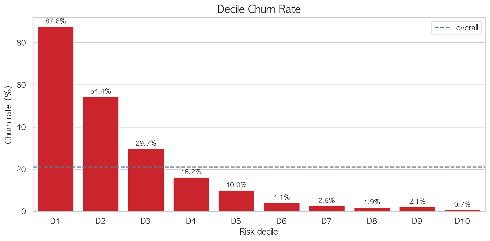
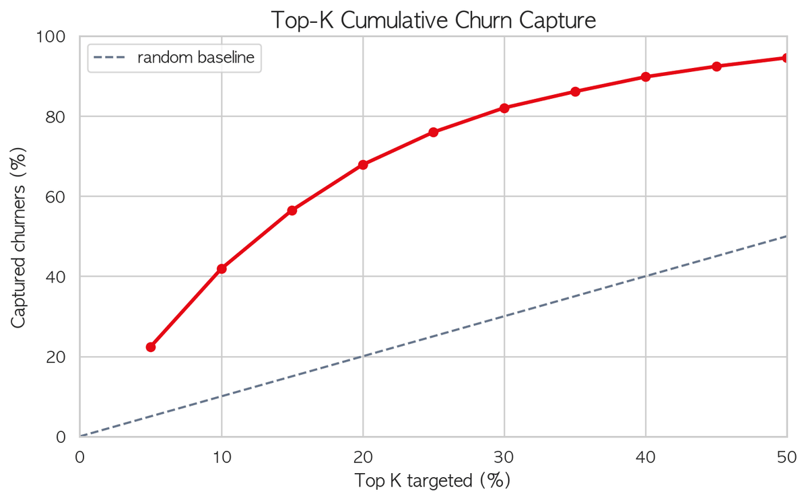
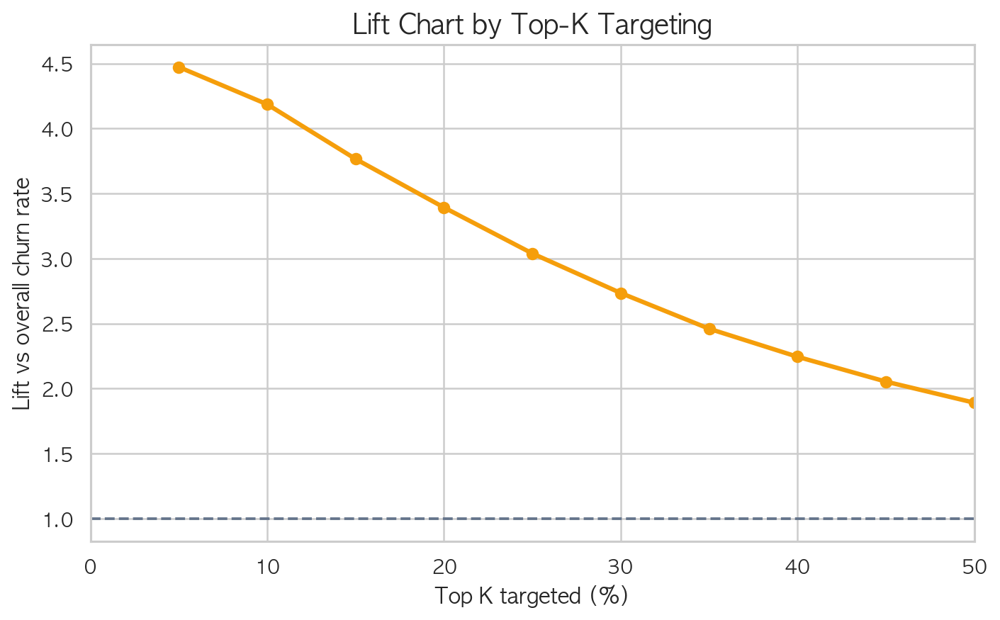
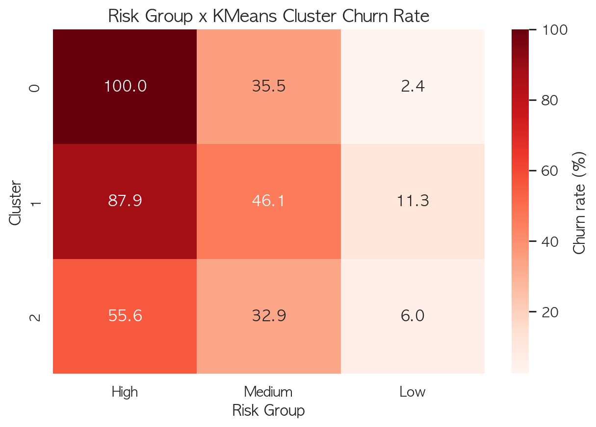

모델 예측 결과 분석
누가 떠나는가 → 누구를 잡을 것인가
1. Decile Analysis
예측 이탈 확률 기준 상위 10%씩 10등분하여 분석합니다
| Decile | 고객 수 | 이탈자 수 | 이탈률 | Lift | 누적 포착률 | 평균 예측확률 |
|---|---|---|---|---|---|---|
| 1 (최고위험) | 1,000 | 876 | 87.6% | 4.19x | 41.85% | 0.935 |
| 2 | 1,000 | 544 | 54.4% | 2.60x | 67.85% | 0.857 |
| 3 | 1,000 | 297 | 29.7% | 1.42x | 82.04% | 0.642 |
| 4 | 1,000 | 162 | 16.2% | 0.77x | 89.78% | 0.379 |
| 5 | 1,000 | 100 | 10.0% | 0.48x | 94.55% | 0.212 |
| 6 | 1,000 | 41 | 4.1% | 0.20x | 96.51% | 0.128 |
| 7 | 1,000 | 26 | 2.6% | 0.12x | 97.75% | 0.089 |
| 8 | 1,000 | 19 | 1.9% | 0.09x | 98.66% | 0.069 |
| 9 | 1,000 | 21 | 2.1% | 0.10x | 99.67% | 0.058 |
| 10 (최저위험) | 1,000 | 7 | 0.7% | 0.03x | 100% | 0.052 |
Decile별 실제 이탈률
Decile별 실제 이탈률 (노트북 출력)

예측 확률 상위 10%씩 10등분 — 상위 Decile일수록 실제 이탈률이 급격히 높음
2. Top-K Campaign Targeting
예산 규모에 따라 상위 k%를 타겟팅했을 때의 효율
Top-K Cumulative Churn Capture

상위 k% 타겟팅 시 전체 이탈자 포착률 — 곡선이 빨리 올라갈수록 효율적
Lift Chart

랜덤 타겟팅 대비 모델 효율 — 상위 10%에서 4.19배 Lift
핵심: 상위 20% 고객(2,000명)만 타겟팅해도 전체 이탈자의 67.85%를 포착합니다. 랜덤 타겟팅 대비 3.39배 효율적입니다.
3. Risk Group 분류
예측 확률 기준으로 고객을 3단계로 분류합니다
4. 고위험 고객 프로파일
High Risk 고객이 전체 평균 대비 어떤 차이를 보이는지 분석합니다
수치형 변수 비교
High Risk 평균 vs 전체 평균 차이
범주형 변수 비교
High Risk 비율 vs 전체 비율 차이 (Top 변수)
고위험 고객 요약: 최근 접속이 뜸하고, 시청량과 추천 반응이 낮으며, Basic 요금제 + Mobile 중심 사용 패턴을 보이는 고객군입니다.
5. KMeans Cluster 결합 검증
모델 예측(Risk Group)과 비지도 군집(KMeans)이 일치하는지 교차 검증
High Risk 고객이 KMeans Cluster 1에 집중
두 기준의 차이
검증 결과
Risk Group × KMeans Cluster 교차 히트맵

High Risk 고객의 98.9%가 KMeans Cluster 1(고위험 군집)에 집중
의미: 지도학습(Stacking 모델)과 비지도학습(KMeans)이 독립적으로 같은 고객군을 식별했습니다. 이는 우리 모델의 리텐션 타겟팅이 단순한 확률 수치가 아니라, 실제 행동 패턴에 기반한다는 것을 뒷받침합니다.